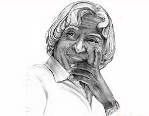

About Dr. Kalam
Dr. Avul Pakir Jainulabdeen Abdul Kalam (1931-2015) was an Indian aerospace scientist who served as the 11th President of India from 2002 to 2007. He was intimately involved in India's civilian space program and military missile development efforts, earning him the nickname "Missile Man of India". His work in the development of ballistic missile and launch vehicle technology earned him the highest civilian awards in India, including the Bharat Ratna.
Known for his humility, dedication to public service, and passion for education, Dr. Kalam inspired millions of Indians to dream big and work hard to achieve their goals. His vision for India was not just about technological advancement, but also about social equity and peace. He often interacted with students, encouraging them to think creatively and work towards making India a developed nation.
The Legacy of Dr. A. P. J. Abdul Kalam
Dr. A. P. J. Abdul Kalam's journey from a humble background to becoming the President of India is a story of perseverance, dedication, and passion for science and education.
- Born in a small town of Rameswaram, Tamil Nadu, on October 15, 1931, Dr. Kalam grew up with a strong desire to learn and make a difference in the world.
- He pursued his studies in physics and aerospace engineering, which paved the way for his significant contributions to India's defense and space capabilities.
- Dr. Kalam played a pivotal role in the development of India's first satellite launch vehicle (SLV-III) and ballistic missiles, earning him the title of "Missile Man of India".
- His presidency from 2002 to 2007 was marked by his efforts to bring technology and education to the forefront of national development.
- He authored several books, including "Wings of Fire" and "Ignited Minds", which continue to inspire generations of young Indians.
- Dr. Kalam's deep connection with the youth and his vision for a developed India by 2020 left an indelible mark on the nation.
- Even after his presidency, Dr. Kalam continued to engage with students, scientists, and citizens, spreading his message of innovation, peace, and progress.